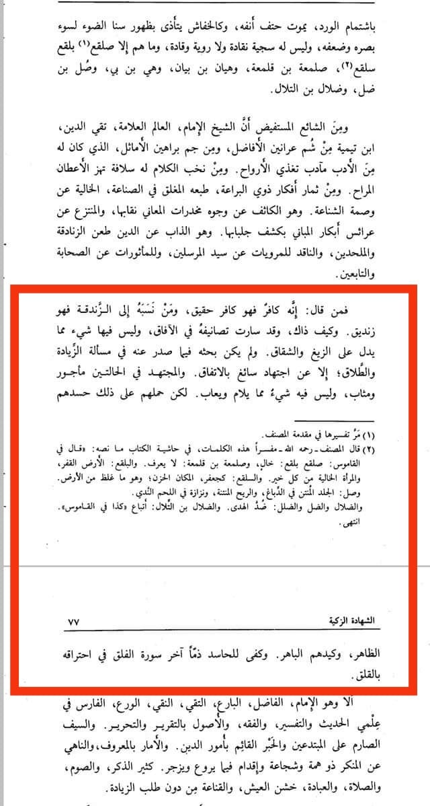
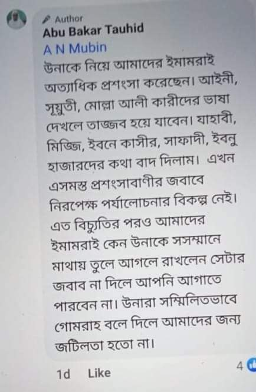

তাকিউদ্দিন সুবকি আর আলাউদ্দিন বুখারিরা যখন শাইখুল ইসলাম ইবনু তাইমিয়া রাহিমাহুল্লাহকে…
৫ জুলাই, ২০২৩
তাকিউদ্দিন সুবকি আর আলাউদ্দিন বুখারিরা যখন শাইখুল ইসলাম ইবনু তাইমিয়া রাহিমাহুল্লাহকে ‘কা/ফে/র’ ‘কা/ফের’ বলে চিক্কুর পাড়ল, তখন হানাফি মাজহাবের বিখ্যাত ইমাম হাফেজ বদর উদ্দিন আইনি রাহ. (মৃত্যু-৮৫৫ হি.) শক্ত জবাব দিলেন। তাঁর শান ও মান বর্ণনা শেষে বললেন,
فمن قال انه كافر فهو كافر حقيق.
“যে বা যারা বলে (তিনি) ইবনু তাইমিয়া রাহ. কা/ফের, তারা নিজেই প্রকৃত কা/ফের।” [আশ-শাহাদাতুয যাকিয়্যাহ - ৭৬ পৃষ্ঠা]
অতঃপর ইবনু হাজার হাইতামি গং যখন যাগায়-যগায় ইবনু তাইমিয়াকে ‘যিন্দিক’ বলে গালি দিল, জবাবে ইমাম আইনি রাহ. বলেন—
.و من نسبه الى الزندقة فهو زنديق
“যে বা যারা ইবনু তাইমিয়াকে জিন্দিক আখ্যা দেয়, তারা নিজেই জি/ন্দিক।” [প্রাগুক্ত]
এরপর ইমাম আইনি রাহ. আশ্চর্য প্রকাশ করে বলেন—
وكيف ذاك، وقد سارت تصانيفه في الآفاق، وليس فيها شيء مما يدل على الزيغ والشقاق. ولم يكن بحثه فيما صدر عنه في مسألة الزيادة والطلاق؛ إلا عن اجتهاد سائغ بالاتفاق والمجتهد في الحالتين مأجور ومثاب، وليس فيه شيءٌ مما يلام ويعاب.
“এটি (তিনি কা/ফের/যি/ন্দিক) কীভাবে হয়! যেখানে তাঁর রচনাসমগ্র দিগন্ত জুড়ে ছড়িয়ে পড়েছে, তাতে এমন কিছুই নেই, যা ভ্রষ্টতা বা বিরুদ্ধাচরণের প্রতি নির্দেশ করে। “যিয়াদাহ” আর “তালাকের” মাসআলায় তাঁর থেকে যে গবেষণাকর্ম প্রকাশিত হয়েছে, তা সর্বসম্মতিক্রমে অনুমোদিত ইজতিহাদ থেকে। আর মুজতাহিদ (ভুল-শুদ্ধ) উভয় হালতেই সাওয়াবের ভাগিদার হন। এতে দোষারোপ বা তিরস্কারের কিছু নেই।” [প্রাগুক্ত]
অতঃপর শাইখুল ইসলামের নামে সুবকি, হাইতামি, ইবনু জামাআ আর নাবহানিদের এ কুৎসা রটনা ও গালমন্দের কারণ তিনি সংক্ষেপে উল্লেখ করেছেন এই বলে যে,
ولكن حملهم على ذلك حسدهم الظاهر، وكيدهم الباهر. وكفى للحاسد ذمّاً آخر سورة الفلق في احتراقه بالقلق.
“শাইখুল ইসলামের প্রতি প্রকাশ্য হিংসা-পরশ্রীকাতরতা আর নগ্ন চক্রান্তই এ কুৎসা রটানোর প্রতি তাদের প্ররোচিত করেছে। মনঃকষ্টে পুড়তে থাকা হিংসুকদের তিরস্কার হিসেবে সূরা ফালাকের শেষাংশই যথেষ্ট।”
[আশ-শাহাদাতুয যাকিয়্যাহ - ৭৬-৭৭ পৃষ্ঠা]
আজও যারা শাইখুল ইসলাম ইবনু তাইমিয়ার নাম শুনলে অন্তরের জ্বালা শুরু হয়ে যায়, রাতের ঘুম হারাম হয়ে যায়, তাদের মনঃকষ্টের রহস্য আমরা জানি। হিংসুকদের আলাদা শাস্তি দেয়ার প্রয়োজন পড়ে না; ‘অন্তরে জ্বালা’— এটাই তাদের চরম শাস্তি। .موتوا بغيظكم

